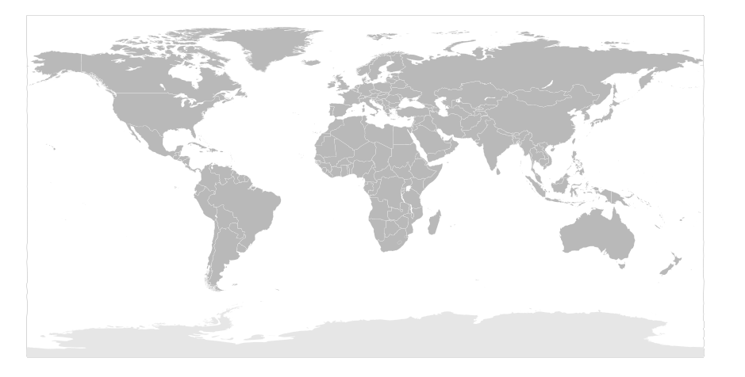
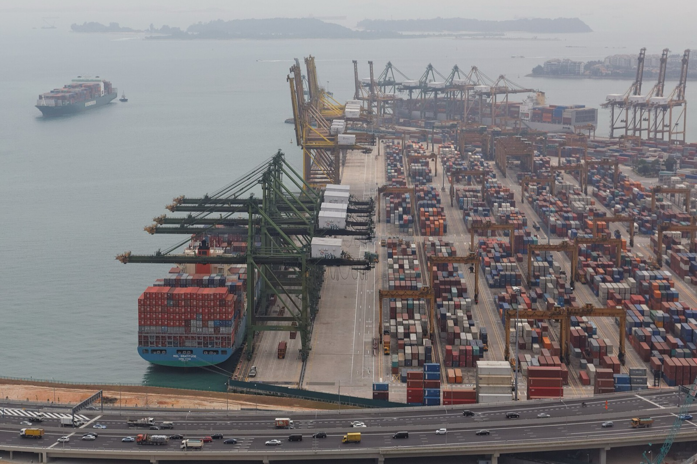
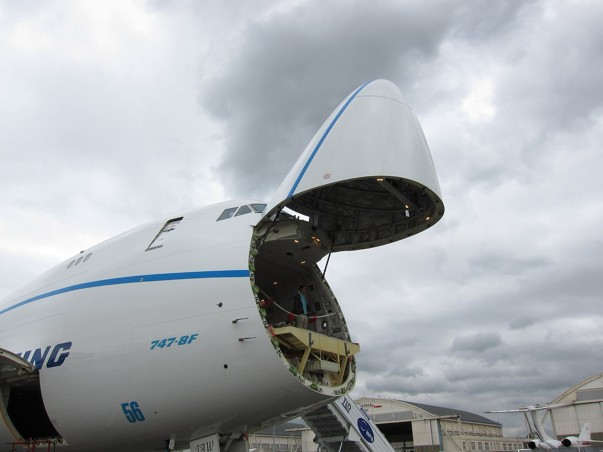
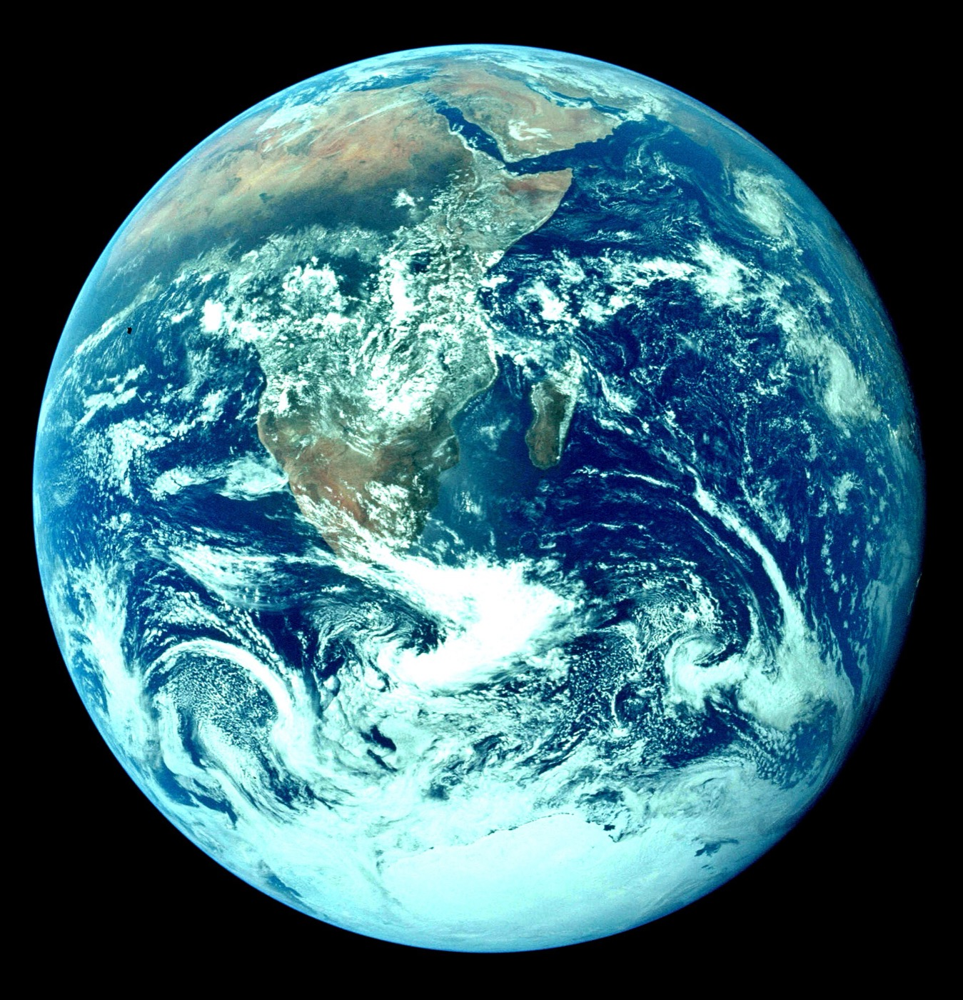

LİSANSLI. GÜVENİLİR. ŞEFFAF.
Talepten Teslimata, Uçtan Uca İthalat Yönetimi
— sipariş şu anda canlı takip ediliyor
LİSANSLI. GÜVENİLİR. ŞEFFAF.
Hakkımızda
Fabrika görüşmesinden gümrük teslimatına kadar süreci kendi ekibimizle yürütür, her aşamayı yazılı olarak raporlarız.
Gerçek zamanlı izlenen güzergahlar üzerinden çalışan tedarik ve lojistik ağı






Talebinize uygun, karşılaştırmalı teklif veren gerçek üreticilerle doğrudan eşleştirme.
Detaylı bilgiSeri üretim sürecinin periyodik fotoğraf ve raporlarla ilerlemesini panelinizden izlersiniz.
Detaylı bilgiFabrikada fiziksel numune kontrolü yapan ekibimiz, üretime başlamadan önce onay verir.
Detaylı bilgiMalın limana ulaşmasından konteyner takibine kadar tüm sevkiyat süreci canlı izlenir.
Detaylı bilgiGümrükten çekim, evrak ve mevzuat süreçleri uzman ekibimiz tarafından yönetilir.
Detaylı bilgiResmi kaynaklara dayalı GTİP, KDV, ek vergi ve korunma önlemi hesaplama aracımızla önceden bilirsiniz.
Hesaplama aracını aç